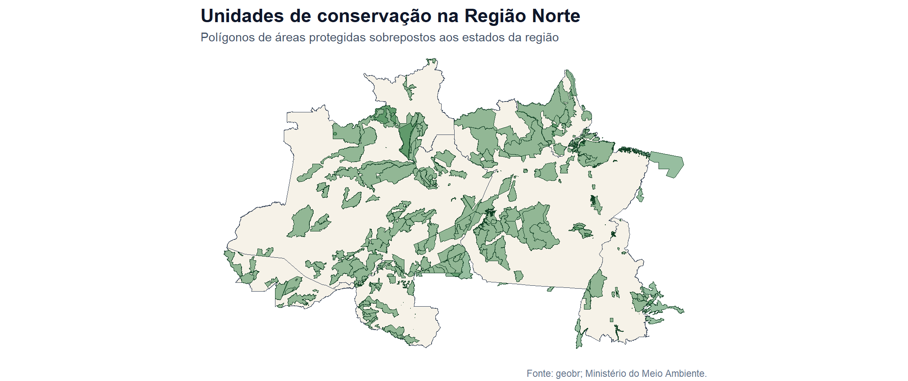
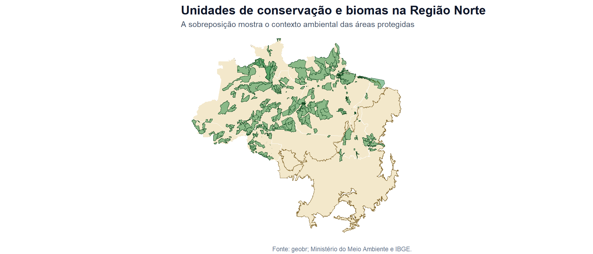
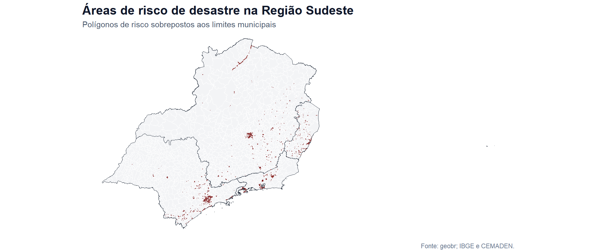
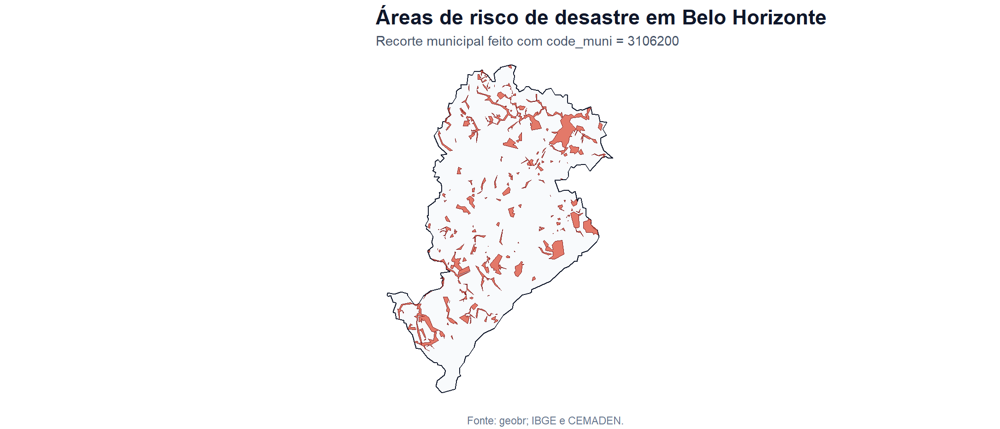

| FUNÇÃO | BASE | DISPONIBILIDADE_NO_GEOBR | RECORTE_USADO |
|---|---|---|---|
| `read_conservation_units()` | Unidades de conservação | Somente 202402 e 202503 | 202503 |
| `read_disaster_risk_area()` | Áreas de risco de desastre | Somente 2010 | 2010 |
ATIVIDADE AVALIATIVA 9
Universidade Federal Fluminense
31/05/2026
Bases geográficas oficiais no R
O pacote geobr permite acessar bases espaciais oficiais brasileiras diretamente no R.
Nesta apresentação, o foco será compreender como duas funções do pacote retornam geometrias espaciais, como essas geometrias podem ser interpretadas e como podem ser visualizadas por meio de mapas simples.
FUNÇÕES SORTEADAS
read_conservation_units()read_disaster_risk_area()Foco: visualizar, localizar e interpretar geometrias espaciais.
As duas funções descrevem aspectos diferentes do território brasileiro.
A primeira mostra o território como espaço de proteção ambiental.
A segunda mostra o território como espaço de vulnerabilidade, prevenção e gestão de riscos.
Unidades de conservação
Áreas oficialmente delimitadas para proteger biodiversidade, ecossistemas e recursos naturais.
Áreas de risco
Polígonos associados a riscos geodinâmicos e hidrometeorológicos, como deslizamentos e inundações.
1. Introdução
O que cada base representa e por que ela é relevante.
2. Exploração
Argumentos, estrutura espacial e dicionário das colunas.
3. Mapas
Visualização regional, sobreposição de camadas e interpretação.
read_conservation_units()Base representada: unidades de conservação brasileiras.
Objetivo da geometria: delimitar áreas protegidas.
Órgão responsável: Ministério do Meio Ambiente.
Nível territorial: nacional, com leitura regional nesta apresentação.
Aplicações: conservação ambiental, planejamento territorial, sobreposição com biomas e estados.
read_disaster_risk_area()Base representada: áreas de risco de desastre.
Objetivo da geometria: localizar áreas suscetíveis a deslizamentos e inundações.
Órgãos responsáveis: IBGE e CEMADEN.
Nível territorial: Brasil, estado ou município.
Aplicações: defesa civil, gestão urbana, prevenção de desastres e planejamento territorial.
| FUNÇÃO | BASE | DISPONIBILIDADE_NO_GEOBR | RECORTE_USADO |
|---|---|---|---|
| `read_conservation_units()` | Unidades de conservação | Somente 202402 e 202503 | 202503 |
| `read_disaster_risk_area()` | Áreas de risco de desastre | Somente 2010 | 2010 |
Essa informação define os recortes temporais possíveis para a atividade. Portanto, a comparação entre as duas funções é uma comparação entre bases territoriais diferentes, não entre séries históricas.
| CRITÉRIO | read_conservation_units() | read_disaster_risk_area() |
|---|---|---|
| Tema territorial | Proteção ambiental | Vulnerabilidade e prevenção de desastres |
| Base representada | Unidades de conservação | Áreas de risco de desastre |
| Fonte oficial | Ministério do Meio Ambiente | IBGE e CEMADEN |
| Recorte usado nos mapas | Região Norte | Região Sudeste e município de Belo Horizonte |
| Tipo de geometria | Polígonos de áreas protegidas | Polígonos de áreas vulneráveis |
| Uso principal | Localizar áreas protegidas | Localizar áreas sujeitas a desastres |
Função 1
A função read_conservation_units() retorna os polígonos das unidades de conservação presentes no território brasileiro.
Para tornar a visualização mais interpretável, a apresentação usa um recorte regional: Região Norte. Esse recorte reduz a complexidade visual do mapa e favorece a leitura espacial.
| ARGUMENTO | DESCRIÇÃO |
|---|---|
| `date` | Define a data da base no formato AAAAMM. |
| `simplified` | Controla se a geometria será simplificada. |
| `output` | Define o formato de saída. O valor 'sf' retorna um objeto espacial. |
| `showProgress` | Controla a exibição da barra de progresso. |
| `cache` | Permite reaproveitar dados já baixados. |
| `verbose` | Controla a impressão de mensagens durante a execução. |
| ELEMENTO | DESCRIÇÃO |
|---|---|
| Objeto sf | Tabela espacial que armazena atributos comuns e geometria no mesmo objeto. |
| Linha | Cada linha representa uma feição espacial: uma unidade de conservação ou uma área de risco. |
| Coluna comum | Atributo descritivo da feição, como nome, código, área, categoria ou município. |
| Coluna geometry | Coluna especial que guarda a forma espacial da feição. |
| CRS | Sistema de referência que informa como a geometria está posicionada na superfície terrestre. |
| Geometria simplificada | Geometria com menos vértices, útil para mapas rápidos e apresentações. |
| TIPO | DESCRIÇÃO |
|---|---|
| POLYGON | Uma única área contínua delimitada por contorno fechado. |
| MULTIPOLYGON | Uma mesma feição formada por duas ou mais áreas separadas. |
| Leitura prática | Ambos representam áreas; o segundo apenas permite partes não contíguas dentro da mesma linha da tabela. |
A distinção é importante porque uma única linha do dataframe pode representar uma área contínua ou um conjunto de áreas separadas pertencentes à mesma feição.
| COLUNA | DESCRIÇÃO |
|---|---|
| uc_id | Atributo complementar mantido pelo geobr para identificação, harmonização ou cruzamento territorial da base. |
| cd_cnuc | Atributo complementar mantido pelo geobr para identificação, harmonização ou cruzamento territorial da base. |
| wdpa_pid | Atributo complementar mantido pelo geobr para identificação, harmonização ou cruzamento territorial da base. |
| nome_uc | Denominação oficial da unidade de conservação. |
| cria_ano | Atributo complementar mantido pelo geobr para identificação, harmonização ou cruzamento territorial da base. |
| cria_ato | Ato legal de criação da unidade de conservação. |
| outro_ato | Outros atos legais que alteram características da unidade, como limites, categoria ou nome. |
| COLUNA | DESCRIÇÃO |
|---|---|
| pl_manejo | Atributo complementar mantido pelo geobr para identificação, harmonização ou cruzamento territorial da base. |
| co_gestor | Atributo complementar mantido pelo geobr para identificação, harmonização ou cruzamento territorial da base. |
| quali_pol | Atributo complementar mantido pelo geobr para identificação, harmonização ou cruzamento territorial da base. |
| ppgr | Atributo complementar mantido pelo geobr para identificação, harmonização ou cruzamento territorial da base. |
| ha_total | Atributo complementar mantido pelo geobr para identificação, harmonização ou cruzamento territorial da base. |
| ha_ato | Ato legal de criação da unidade de conservação. |
| esfera | Esfera administrativa responsável pela unidade de conservação: Federal, Estadual ou Municipal. |
| COLUNA | DESCRIÇÃO |
|---|---|
| uf | Unidade da Federação abrangida pela unidade de conservação. |
| municipio | Municípios abrangidos pela unidade de conservação. |
| org_gestor | Atributo complementar mantido pelo geobr para identificação, harmonização ou cruzamento territorial da base. |
| grupo | Grupo de manejo da unidade de conservação, geralmente associado à proteção integral ou ao uso sustentável. |
| categoria | Categoria de manejo da unidade de conservação, conforme a Lei nº 9.985/2000. |
| cat_iucn | Categoria equivalente no sistema IUCN de gestão de áreas protegidas. |
| amazonia | Atributo complementar mantido pelo geobr para identificação, harmonização ou cruzamento territorial da base. |
| COLUNA | DESCRIÇÃO |
|---|---|
| caatinga | Atributo complementar mantido pelo geobr para identificação, harmonização ou cruzamento territorial da base. |
| cerrado | Atributo complementar mantido pelo geobr para identificação, harmonização ou cruzamento territorial da base. |
| matlantica | Atributo complementar mantido pelo geobr para identificação, harmonização ou cruzamento territorial da base. |
| pampa | Atributo complementar mantido pelo geobr para identificação, harmonização ou cruzamento territorial da base. |
| pantanal | Atributo complementar mantido pelo geobr para identificação, harmonização ou cruzamento territorial da base. |
| marinho | Atributo complementar mantido pelo geobr para identificação, harmonização ou cruzamento territorial da base. |
| situacao | Atributo complementar mantido pelo geobr para identificação, harmonização ou cruzamento territorial da base. |

Unidades carregadas
361
Estados no recorte
7
Recorte usado
Região Norte

A sobreposição com biomas torna a leitura menos abstrata: as unidades de conservação deixam de aparecer apenas como polígonos isolados e passam a ser interpretadas dentro de grandes formações ambientais.
Função 2
A função read_disaster_risk_area() retorna polígonos de áreas de risco de desastre.
Nesta apresentação, a leitura principal será feita para a Região Sudeste, usando a combinação dos estados ES, MG, RJ e SP. Em seguida, será mostrado um recorte municipal de Belo Horizonte.
| ARGUMENTO | DESCRIÇÃO |
|---|---|
| `year` | Define o ano da base. |
| `code_muni` | Permite baixar o Brasil inteiro, uma UF ou um município específico. |
| `simplified` | Controla se a geometria será simplificada. |
| `output` | Define o formato de saída. O valor 'sf' retorna um objeto espacial. |
| `showProgress` | Controla a exibição da barra de progresso. |
| `cache` | Permite reaproveitar dados já baixados. |
| `verbose` | Controla a impressão de mensagens durante a execução. |
risco_mg <- geobr::read_disaster_risk_area(
year = 2010,
code_muni = "MG",
simplified = TRUE,
output = "sf",
showProgress = FALSE,
cache = TRUE,
verbose = FALSE
)
risco_bh <- geobr::read_disaster_risk_area(
year = 2010,
code_muni = 3106200,
simplified = TRUE,
output = "sf",
showProgress = FALSE,
cache = TRUE,
verbose = FALSE
)| COLUNA | DESCRIÇÃO |
|---|---|
| code_muni | Código IBGE do município associado à área de risco. |
| name_muni | Nome do município associado à área de risco. |
| geo_bater | Código único do polígono de área de risco. |
| origem | Atributo complementar da base de áreas de risco. |
| acuracia | Indicador de sobreposição entre o polígono de risco e as unidades censitárias usadas na base. |
| obs | Atributo complementar da base de áreas de risco. |
| code_state | Código numérico da Unidade da Federação. |
| COLUNA | DESCRIÇÃO |
|---|---|
| name_state | Nome da Unidade da Federação. |
| abbrev_state | Sigla da Unidade da Federação. |
| code_region | Código da grande região brasileira. |
| name_region | Nome da grande região brasileira. |
| geometry | Geometria espacial da área de risco, armazenada como POLYGON ou MULTIPOLYGON. |

Áreas carregadas
4.517
Estados no recorte
4
Recorte usado
Região Sudeste

O recorte municipal aproxima a leitura espacial do planejamento urbano. Em vez de observar apenas uma distribuição regional, visualizamos onde os polígonos de risco estão localizados dentro de um limite administrativo específico.
Os mapas mostram áreas voltadas à proteção ambiental e permitem interpretar sua distribuição regional.
A sobreposição com biomas ajuda a entender o contexto ecológico em que essas áreas estão inseridas.
Os mapas mostram áreas vulneráveis a eventos como deslizamentos e inundações.
A sobreposição com municípios e estados ajuda a conectar a geometria do risco ao planejamento territorial.
| MAPA | CAMADA_PRINCIPAL | CAMADA_DE_APOIO | FINALIDADE |
|---|---|---|---|
| Unidades de conservação na Região Norte | Unidades de conservação | Estados da Região Norte | Localizar áreas protegidas em escala regional. |
| Unidades de conservação e biomas | Unidades de conservação | Biomas e estados da Região Norte | Interpretar o contexto ambiental das áreas protegidas. |
| Áreas de risco no Sudeste | Áreas de risco | Municípios e estados do Sudeste | Relacionar risco e divisão político-administrativa regional. |
| Áreas de risco em Belo Horizonte | Áreas de risco | Limite municipal de Belo Horizonte | Aproximar a leitura para um recorte urbano. |
A orientação da atividade é visualizar geometrias, não representar uma variável numérica.
Por isso, os mapas usam:
| CRITÉRIO | read_conservation_units() | read_disaster_risk_area() |
|---|---|---|
| Tema territorial | Proteção ambiental | Vulnerabilidade e prevenção de desastres |
| Base representada | Unidades de conservação | Áreas de risco de desastre |
| Fonte oficial | Ministério do Meio Ambiente | IBGE e CEMADEN |
| Recorte usado nos mapas | Região Norte | Região Sudeste e município de Belo Horizonte |
| Tipo de geometria | Polígonos de áreas protegidas | Polígonos de áreas vulneráveis |
| Uso principal | Localizar áreas protegidas | Localizar áreas sujeitas a desastres |
read_conservation_units()Evidencia a dimensão ambiental do território.
A função permite visualizar áreas legalmente protegidas e relacioná-las com estados, regiões e biomas.
read_disaster_risk_area()Evidencia a dimensão preventiva do planejamento territorial.
A função permite localizar áreas vulneráveis e relacioná-las com recortes administrativos.
As duas funções mostram que o geobr não serve apenas para desenhar mapas.
Ele permite acessar bases oficiais que traduzem diferentes formas de organização do território brasileiro: proteção ambiental, vulnerabilidade, prevenção e planejamento.
Mensagem central
Com poucas linhas de R, é possível baixar, examinar e visualizar geometrias oficiais brasileiras em diferentes escalas territoriais.